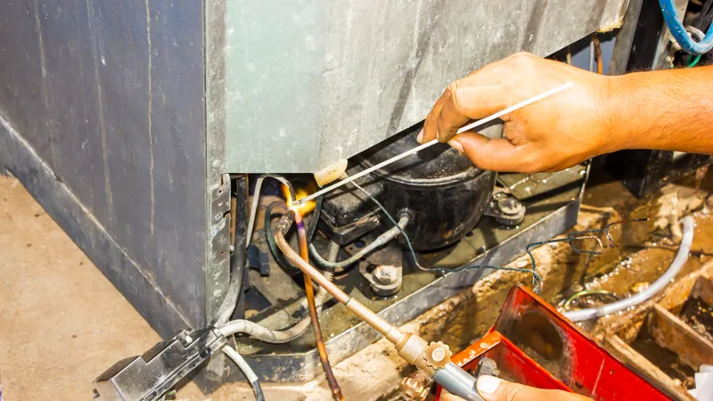
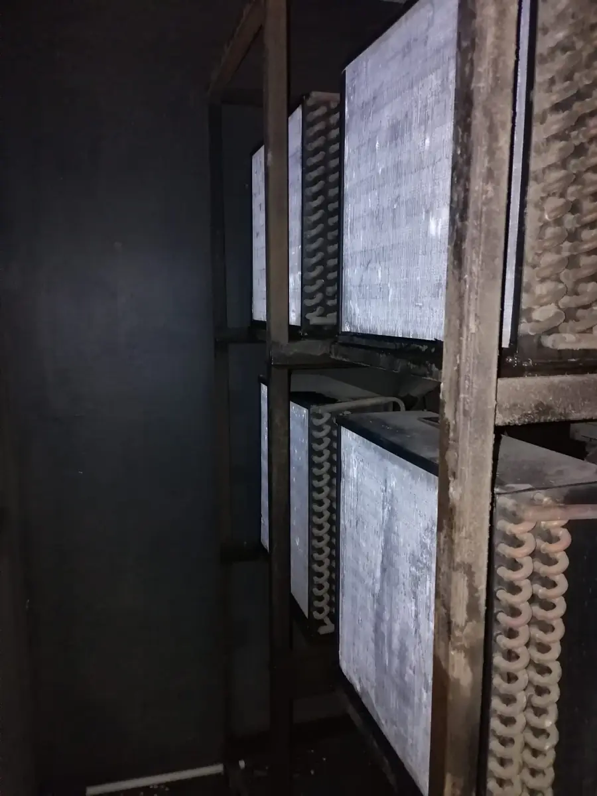
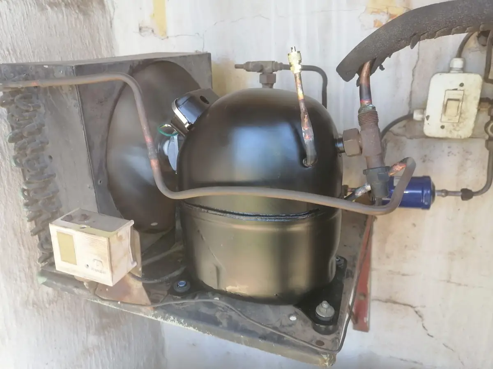

Commercial refrigeration, cold rooms and walk-in freezers
GLS installs, services and repairs refrigeration for restaurants, supermarkets and retail across Johannesburg and Germiston. When a unit stops keeping cold, we respond around the clock.

Refrigeration
What we do
Commercial refrigeration units
Installation and servicing of refrigeration units for retail and food businesses.
Cold rooms and walk-in freezers
Walk-in freezers and cold rooms installed with precision, then maintained so they hold temperature.
Maintenance
Regular inspections of refrigerant levels and electrical wiring, with critical components cleaned, to prevent breakdowns.
Emergency repair
A failed refrigeration unit puts stock and trading at risk. Repair is available 24 hours a day, 7 days a week.
Free site assessment
We assess the site, design the system and talk through options that suit your budget.


Questions
Refrigeration questions
Can GLS install a cold room or walk-in freezer?
Yes. GLS installs walk-in freezers and cold rooms as well as commercial refrigeration units, and services them afterwards.
Who does GLS install commercial refrigeration for?
Restaurants, supermarkets and other retail businesses, along with offices that need climate control.
What should I do if a fridge or freezer stops keeping cold?
Note the make and model, when it stopped and any code on the controller, then call or WhatsApp GLS. If you smell burning or see sparks, switch the unit off at the isolator and keep clear.
Does GLS offer a free assessment for a new installation?
Yes. Free site assessments are available, covering system design, energy efficiency and options that suit your budget.
Contact
Fridge, freezer or cold room down?
Call for urgent faults. Emergency repair is available 24 hours a day, 7 days a week.